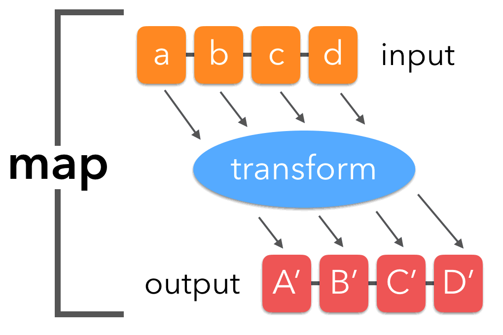
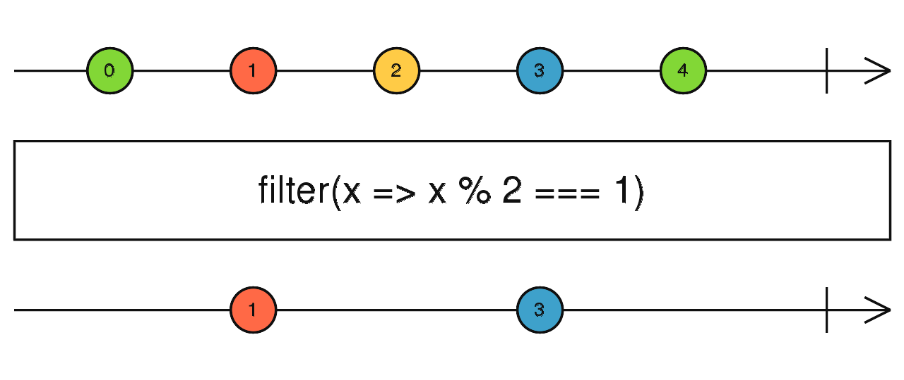
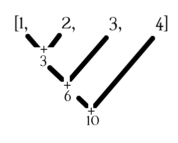

Keyboard shortcuts:
N/СпейсNext Slide
PPrevious Slide
OSlides Overview
ctrl+left clickZoom Element
If you want print version => add '
?print-pdf' at the end of slides URL (remove '#' fragment) and then print.
Like: https://progressbg-python-course.github.io/...CourseIntro.html?print-pdf
Functional programming in Python
Created for
Iva E. Popova, 2016-2025,

Basic Concepts
- Functional programming in Python is a programming paradigm that treats functions as first-class citizens and emphasizes immutability, pure functions, and higher-order functions.
- Key Concepts:
- First-Class Functions : Functions can be assigned to variables, passed as arguments, and returned from other functions.
- Pure Functions : Functions that always return the same output for the same input and have no side effects. I.e. no additions to the primary purpose of the function - to compute and return a value.
- Higher-Order Functions : Functions that take other functions as arguments or return functions ().
- Immutability : Avoiding changes to data structures and preferring immutable data.
- Lambda Functions : Anonymous functions for short operations (lambda x: x * 2).
- , map(), filter(), and reduce() are examples of functional programming in Python.
The map() Function
The map() Function
{kind=link}

Syntax
map()The map() function in Python is a tool for transforming elements within an iterable.- function - a function definition.
- iterable - a sequence (list, tupple, range or string) or any iterable object. Note, that you can pass multiple iterables!
- map() applies the function to each element of the iterable and returns a new iterator containing the transformed elements.
- Example: map list of numbers to list of squared numbers
map(function, iterable, ...)
numbers = [1,2,3,4,5]
sqr_numbers = map(lambda x:x**2, numbers)
print( list(sqr_numbers) )
#[1, 4, 9, 16, 25]
Examples
- Example: Generate all uppercase cyrillic letters by their UTF codes
- Above example can be done with list comprehenstions, as well:
- Example: feed map() with multiple iterables. Note that this example can not be done easilly with list comprehensions
letters = map(chr, range(1040, 1072))
print( list(letters) )
#['А', 'Б', 'В', 'Г', 'Д', 'Е', 'Ж', 'З', 'И', 'Й', 'К', 'Л', 'М', 'Н', 'О', 'П', 'Р', 'С', 'Т', 'У', 'Ф', 'Х', 'Ц', 'Ч', 'Ш', 'Щ', 'Ъ', 'Ы', 'Ь', 'Э', 'Ю', 'Я']
letters = [chr(code) for code in range(1040, 1072)]
print( list(letter
#['А', 'Б', 'В', 'Г', 'Д', 'Е', 'Ж', 'З', 'И', 'Й', 'К', 'Л', 'М', 'Н', 'О', 'П', 'Р', 'С', 'Т', 'У', 'Ф', 'Х', 'Ц', 'Ч', 'Ш', 'Щ', 'Ъ', 'Ы', 'Ь', 'Э', 'Ю', 'Я']
l1 = [1,2,3]
l2 = [1,2,3]
l_sum = map(lambda a,b: a+b, l1, l2)
print( list(l_sum) )
# [2, 4, 6]
The filter() Function
The filter() Function
{kind=link}

filter()is a built-in function that allows to process an iterable and extract those items that satisfy a given condition
filter(function, iterable)
- function - a function definition. Should return a Boolean value
- iterable - a sequence (list, tupple, range or string) or any iterable object.
- When you pass a function and an iterable to filter(), it applies the function to each item of the iterable and yields only those items for which the function returns True.
- The filter() function returns an iterator that lazily evaluates each item in the iterable it processes
- Example: List of even numbers with named function
- Example: List of even numbers with lambda function
def is_even(x):
return x % 2 == 0
evens = filter(is_even, range(1, 11))
print(list(even_numbers))
# [2, 4, 6, 8, 10]
evens = filter(lambda x: x % 2 == 0, range(1, 11))
print(list(evens))
# [2, 4, 6, 8, 10]
More examples
- Example: filter empty strings.
- If None is used for filter function, it defaults to Identity function - filters out elements that are False
- Note that we can use list comprehenstions insead of filter
- Example: Names, starting with 'A'
- With list comprehension
names = ["Ivan", "", "Alex", "", "Maria", "Angel", ""]
not_empty_names = filter(None, names)
print(list(not_empty_names))
["Ivan", "Alex", "Maria", "Angel"]
names = ["Ivan", "", "Alex", "", "Maria", "Angel", ""]
not_empty_names = [ name for name in names if name]
print( list(not_empty_names) )
names = ["Ivan", "Alex", "Maria", "Angel", ""]
filtered_names = filter(lambda name: name.startswith("A"), names)
print(list(filtered_names))
names = ["Ivan", "Alex", "Maria", "Angel", ""]
filtered_names = [name for name in names if name.startswith("A")]
print(list(filtered_names))
The reduce() Function
The reduce() Function
{kind=link}

reduce()allows us to apply a function to an iterable and reduce it to a single cumulative value- In Python3, reduce() is not built-in, but we must import it from
functoolsmodule! - function - a function definition.The first argument passed to function is the accumulated value and the second argument is the update value from the sequence
reduce(lambda x, y: x+y, [1, 2, 3, 4, 5])calculates ((((1+2)+3)+4)+5)- iterable - a sequence (list, tupple, range or string) or any iterable object.
- If the optional initializer is present, it is placed before the items of the iterable in the calculation, and serves as a default when the iterable is empty
reduce(lambda x, y: x+y, [1, 2, 3, 4, 5], 100)calculates (((((100+1)+2)+3)+4)+5)
from functools import reduce
reduce(function, iterable[, initializer])
Examples
- Example: sum the numbers from 0 to 10, including
- Note, that in practice you can use the sum function:
- Example: sum the prices of all products
- With sum function and list comprehension:
from functools import reduce
res = reduce(lambda a,b: a+b, range(11))
print(res)
#55
print(sum(range(11)))
products = [
{'name':'apples', 'price': 2},
{'name':'oranges', 'price': 5},
{'name':'bananas', 'price': 3},
]
#note that here we must provide initializer
total_price = reduce( lambda price, product:price+product['price'], products, 0)
print(total_price)
total_price = sum([p["price"] for p in products])
Example: map-reduce chaining
- Often in practice filter, map and reduce are used in combination
- The following example shows how to chain multiple map operations with reduce to transform and aggregate data
# Chain: double → square → sum
result = reduce(add, # Step 3: Sum all values
map(lambda x: x ** 2, # Step 2: Square each value
map(lambda x: x * 2, # Step 1: Double each value
numbers)))
print(f"Original: {numbers}")
print(f"Chain: double → square → sum = {result}")
Example: map - reduce
- The following example shows how to combine map and reduce to perform element-wise addition across multiple lists. It use map with multiple iterables and reduce to sum corresponding elements
- *t parameter in lambda collects in a tuple (t) all arguments. For example, on the first iteration, *t would collect the first element of each list into the tuple t=(1, 1, 1).
- The reduce function applies its lambda to the tuple t, summing all its elements.
from functools import reduce
l1 = [1, 2, 3]
l2 = [1, 2, 3]
l3 = [1, 2, 3]
res = map(lambda *t: reduce(lambda a, c: a + c, t), l1, l2, l3)
print(list(res))
# [3, 6, 9]
map/filter vs Comprehensions
map/filter vs Comprehensions
Why to use map/filter
- While list/dictionary/set comprehensions can replace most uses of map and filter, there are still reasons why these functions remain useful:
- Working with multiple iterables: map() can apply a function to elements from multiple sequences in parallel:
- Memory efficiency with large data: map() returns an iterator, not a list, so it's lazy-evaluated:
list(map(lambda x, y: x + y, [1, 2, 3], [4, 5, 6])) # [5, 7, 9]
# This doesn't build the whole list in memory
result = map(process_function, very_large_dataset)
filtered = filter(lambda x: x > 1000, huge_dataset) # Iterator, not list
Why to use Comprehensions
- Readability for simpler operation:
- When you need a list immediately: Comprehensions produce the full result at once
- Combining mapping and filtering: Comprehensions handle this elegantly:
squares = [x**2 for x in numbers] # vs. map(lambda x: x**2, numbers)
squares = [x**2 for x in range(10)] # Ready to use list
even_squares = [x**2 for x in numbers if x % 2 == 0]
# vs
even_squares = map(lambda x: x**2, filter(lambda x: x % 2 == 0, numbers))
Decorators
Decorators
Overview
- A decorator is a software design pattern.
- Decorators dynamically alter the functionality of a function, method, or class without having to directly use subclasses or change the source code of the function being decorated
- Simply said, decorators allows us to insert logic before and after a function is called.
How Decorator Pattern works in Python?
decorated = decorator(undecorated)
def stars_decorator(f):
def wrapper():
print("*" * 50)
f()
print("*" * 50)
return wrapper
def greet():
print("Howdy World!")
# let's decorate greet:
greet = stars_decorator(greet)
# and use it:
greet()
the @ syntactic sugar
- Python provides a simple syntax (
@decorator_name) for calling higher-order functions. - A function decorator, with @ syntax, can be regarded as a "syntactic sugar" for a function that takes a function and returns a function
- Example:
#define the decorator:
def decorator():
pass
# define a function to be decorated:
@decorator
def decorated():
pass
# just call the decorated function:
decorated()
#define the decorator:
def stars_decorator(f):
def wrapper():
print("*" * 50)
f()
print("*" * 50)
return wrapper
# let's decorate greet:
@stars_decorator
def greet():
print("Howdy World!")
# and use it:
greet()
Decorator Pattern in Python - example with arguments
What about if we want the decorated function to take some arguments?
def stars_decorator(f):
def wrapper(n):
print("*" * 50)
f(n)
print("*" * 50)
return wrapper
def greet(name):
print("Howdy {}!".format(name))
# let's decorate greet:
greet = stars_decorator(greet)
# and use it:
greet("Pesho")
Example with return value
- The function to be decorated has to return value - but as it's executed inside wrapper, we need to explicitly return the value from wrapper. That is because, the wrapper will be our decorated function, after the decoration process.
def log_decorator(f):
def wrapper(a,b):
print("LOG: The function was executed!")
return f(a,b)
return wrapper
@log_decorator
def sum(x,y):
return (x+y)
print( sum(2,3) )
Readings
- Improve Your Python: Decorators Explained by Jeff Knupp
Homework
Homework
- The tasks are given in next gist file
- You can copy it and work directly on it. Just put your code under "### Your code here".
These slides are based on
customised version of
framework